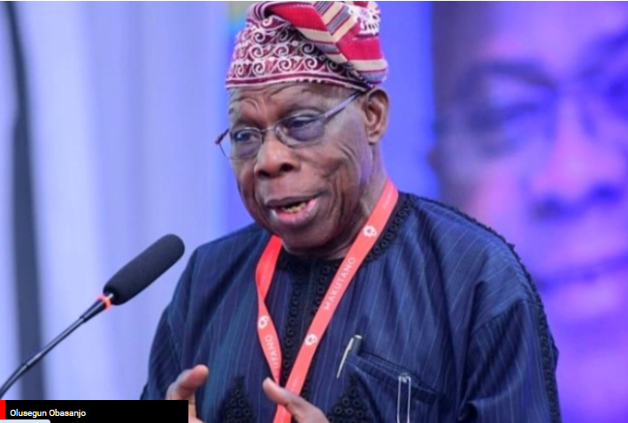
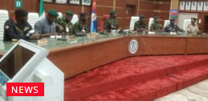
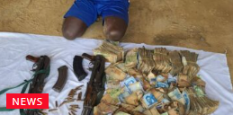

6th August 2024

Former President Olusegun Obasanjo has said that those benefiting from the lucrative business of fuel importation are going to make efforts to frustrate the Dangote Petroleum Refinery.
Obasanjo stated this in the wake of allegations by the President of the Dangote Group, Alhaji Aliko Dangote, that some ‘mafias’ were making efforts to frustrate the $20bn refinery.
This came as it was gathered on Monday that the multi-billion dollar refinery and other domestic refineries had yet to purchase crude oil in naira based on the directive of President Bola Tinubu to the Nigerian National Petroleum Company Limited.
In an interview with Financial Times, the former President described the Dangote refinery as something that should encourage both Nigerians and non-Nigerians.
“Aliko’s investment in a refinery, if it goes well, should encourage both Nigerians and non-Nigerians to invest in Nigeria.
“If those who are selling or supplying refined products for Nigeria feel that they will lose the lucrative opportunity, they will also make every effort to get him frustrated,” Obasanjo stated.
Officials of the Dangote Group recently cried out that international oil companies were frustrating the refinery by refusing to sell crude or by selling to them at a premium up to $4 above the normal price.
3 hours ago
3 hours ago
4 hours ago

Vanguard: The nationwide protest against hunger in the country turned riotous in Kaduna and Zaria yesterday, compelling the state government to declare a dusk-to-dawn curfew. Aside from Kaduna, the protest also continued in Lagos, Abuja, Jos, Benin, Kano, and Zamfara, despite President Bola Tinubu’s nationwide broadcast on Sunday
The Central Bank of Nigeria (CBN) has granted the approval for a pivotal financial accommodation to support the proposed merger between Unity Bank Plc and Providus...
The Lagos State Deputy Governor, Obafemi Hamzat, has said the State government will not allow faceless people on social media to promote ethnic bigotry to divide...
Justice Akintayo Aluko of the Federal High Court in Lagos yesterday granted bail in the sum of N50 million to two alleged hackers, Timothy Oluwabukola and Anthony Odemerho, who were accused by the police of allegedly hacking into MTN Nigeria Communication Plc system and stealing airtime and data valued at N1.9 billion.
The Special Fraud Unit of the Nigeria Police docked the two men before Justice Aluko on a four-count charge of conspiracy, unauthorised access to the company’s web-based Application Programming Interface (API), and unlawful conversion.
Oluwabukola, a student of Moshood Abiola Polytechnic (MAPOLY) Abeokuta, Ogun State, and Odemerho, the proprietor of Resign Regal Academy in Benin City, Edo State, allegedly committed the offences between January and April this year in Lagos and Edo States.
Justice Aluko, in his ruling on separate bail applications filed by the defendants through their lawyers, ordered them to produce two sureties, one of whom must be a civil servant either in the federal or Lagos state civil service and a grade level 14 officer.
The judge also directed that the second surety must be a landed property owner within the jurisdiction of the court, must provide evidence of ownership, and swear to an affidavit of means.
The court further directed that the defendants should be remanded in the custody of the Nigerian Correctional Services (NCoS) pending the perfection of their bail conditions.

President Bola Tinubu’s former spokesman for the Southeast, Josef Onoh, has responded to Peter Obi’s criticism that the President’s recent national address failed to address key...

The Inspector General of Police (IGP), Kayode Egbetokun, has warned that it is implicating to be seen with flags of other countries during a protest. Egbetokun...